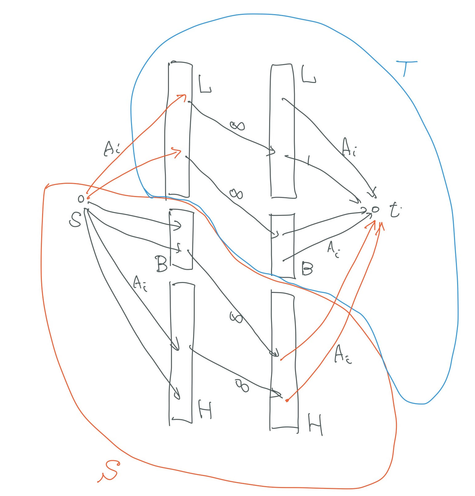

ABC354-G の解答とともに，関連する予備知識 (König の定理, Dilworth の定理) をまとめます．
問題概要
英小文字からなる，長さ1以上の文字列 $S_1, \dots, S_N$ と， 正の整数 $A_1, \dots, A_N$ が与えられる． $T \subseteq \{1, 2, \ldots, N\}$ であって，$i, j \in T$ で $S_i$ が $S_j$ の部分文字列となるような異なる $i, j$ が存在しないものについて， $\sum \{ A_i \mid i \in T\} $ の最大値を求めよ．
制約
$1 \leq N \leq 100$， $|S_1| + \dots + |S_N| \leq 5000$，$ 1 \leq A_i \leq 10^9$．
状況
公式解説 を読んだのですが，よく理解できず．たとえば 「それぞれの重みの個数だけ頂点があると考えることで同じ問題に帰着する」 のがわかりませんでした．
考えたところ，Dilworth の定理の Konig の定理経由の証明と， Konig の定理のフローを使った証明を組み合わせれば良いということがわかりました．
前提
前に書いた記事 「Dilworth の定理，Konig の定理 」に必要事項があります．
解法
$\bar{N} := \{1, 2, \dots, N\}$ と書く． また，$a$ が $b$ の部分文字列の時に $a \preceq b$，真の部分文字列の時には $a \prec b$ と書くことにする． $T \subseteq N$ に対して，$\sum \{A_i \mid i \in T \}$ を，$f(T)$ と書く．
すべての $i, j$ に対して $S_i \prec S_j$ や $S_i \preceq S_j$ が成り立つかどうかを決定する 作業は， たとえばローリングハッシュを使うことで，$O(LN)$ 程度で実行できる．ここで，$L = \sum_i |S_i|$． この結果を用いて， $S_i = S_j$ となる $i \not= j$ があったら，$A_i$ が最大のもののみを残して他を削除する．このようにしても答は変わらない．
問題文の「$T \subseteq \bar{N}$ であって，$i, j \in T$ で $S_i \preceq S_j$ となるような異なる $i, j$ が存在しない」ような $T$ を，反鎖と呼ぶことにする． 反鎖 $T$ であって，$T \subsetneq T’$ となる反鎖 $T’$ が存在しないものを，極大反鎖と呼ぶことにする．
ノード $s$, $t$, $l_i$, $r_i$ ($i \in \bar{N})$ を用意して， 次のような辺に容量のある有向グラフ $(G, R)$ を考える:
- $G = \{s, t\} \cup \{l_i \mid i \in \bar{N} \} \cup \{r_i \mid i \in \bar{N} \}$
- $(s, l_i) \in R$．容量は $A_i$．
- $(r_i, t) \in R$．容量は $A_i$．
- $S_i \prec S_j$ のとき，$(l_i, r_j) \in R$．容量は $\infty$．
反鎖 $B’$ を任意に取る．$B’ \subseteq B$ となる極大反鎖 $B$ が取れる． $L = \{i \in \bar{N} \mid \exists x \in B.\; S_i \prec S_x \}$， $H = \{i \in \bar{N} \mid \exists x \in B.\; S_x \prec S_i \}$ とすると，極大性から $\{L, B, H\}$ は，$\bar{N}$ の分割になっている． また，$S = \{s\} \cup \{ l_i \mid i \in B \cup H \} \cup \{ r_i \mid i \in H \}$， $T = \{t\} \cup \{ l_i \mid i \in L \} \cup \{ r_i \mid i \in L \cup B \}$ とすると，$(S, T)$ は $G$ のカットである． ここで，$i \in B \cup H$ に対する $l_i$ と，$j \in L\cup B$ に対する $r_j$ について， $(l_i, r_j) \in R$ は成り立たない (もし成り立つと $S_y \preceq S_i \prec S_j \preceq S_x$ となる $x, y \in B$ が存在することになってしまう)． したがって，このカット容量は $\sum \{ A_i \mid i \in L \} + \sum \{ A_i \mid i \in H \}$，すなわち $f(\bar{N}) - f(B)$ である． したがって，$G$ のカットの最小容量を $M$ とすれば，$f(B’) \leq f(B) \leq f(\bar{N}) - M$ が成り立つ．
次に，$G$ の最小容量 $M$ のカット $(S, T)$ をとる．ただし，$s \in S,\; t \in T$． カット容量 $M$ は，$\sum \{ A_i \mid l_i \in T \} + \sum \{ A_i \mid r_i \in S\}$ であって， $(l_i, r_j) \in R$, $l_i \in S$, $r_j \in T$ となる $i, j$ は存在しない (さもないと カット容量が $\infty$ になってしまう)．そこで， $B := \{i \in \bar{N} \mid l_i \in S,\; r_i \in T\}$ とする．$i, j \in B$ に対し，$S_i \prec S_j$ とならないので， $B$ は反鎖である． さて，$U, V \subseteq \bar{N}$ に対して $g(U, V) := \sum \{A_i \mid l_i \in U,\; r_i \in V\}$ と書くと， $M = \sum \{ A_i \mid l_i \in T \} + \sum \{ A_i \mid r_i \in S\} = g(T, T) + g(T, S) + g(T, S) + g(S, S)$ $\geq g(T, T) + g(T, S) + g(S, S) = f(\bar{N}) - g(S, T) = f(\bar{N}) - f(B)$．すなわち，$f(B) \geq f(\bar{N}) - M$．
以上合わせて，$G$ の最大流を $M$ として，求める答は $f(\bar{N}) - M$ である．
Keywords: Konig’s Theorem Koenig’s Theorem Dilworth’s Theorem マッチング matching flow フロー 最小カット antichain chain